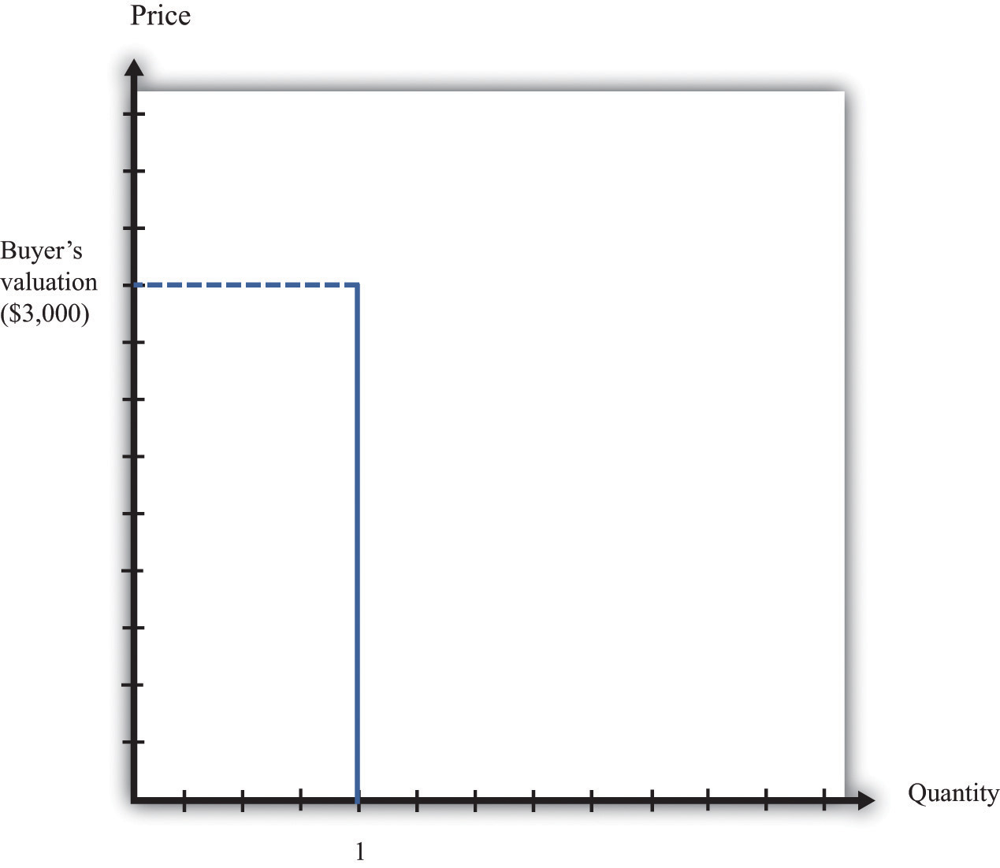
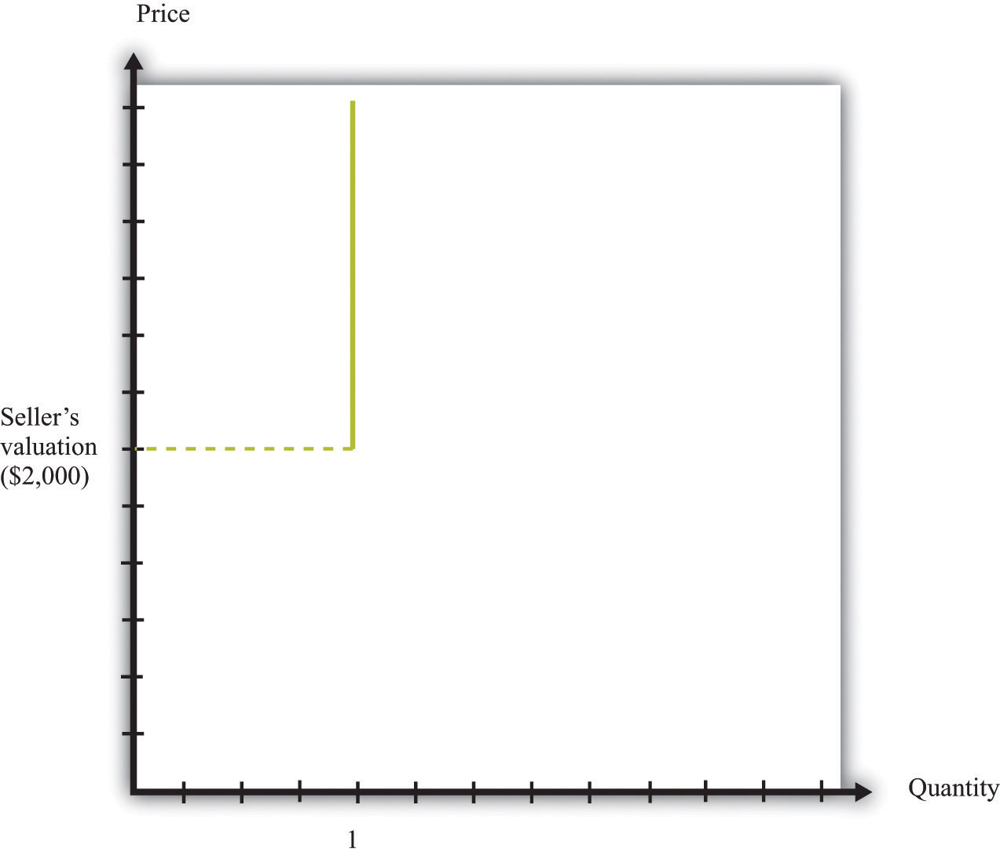
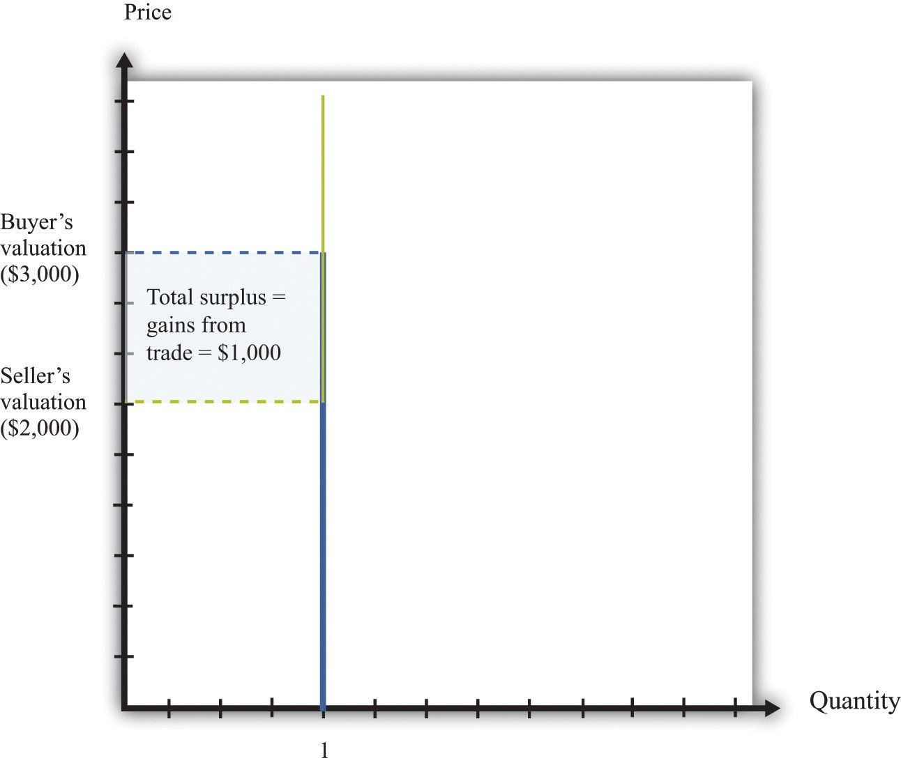
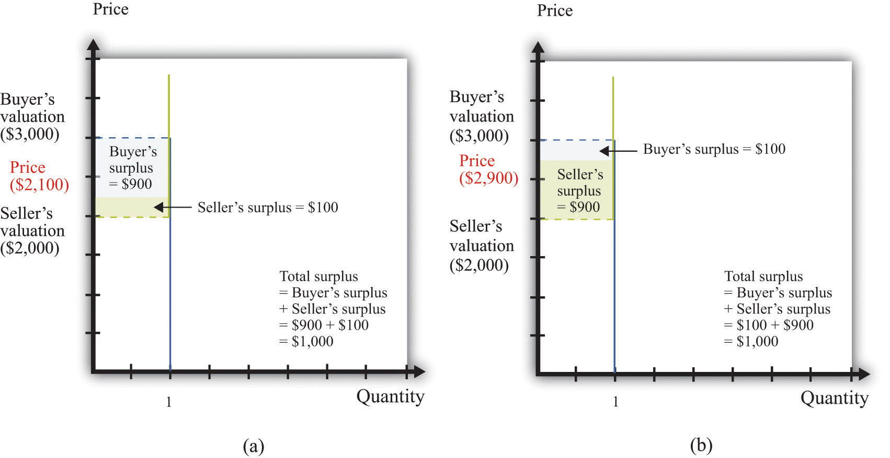
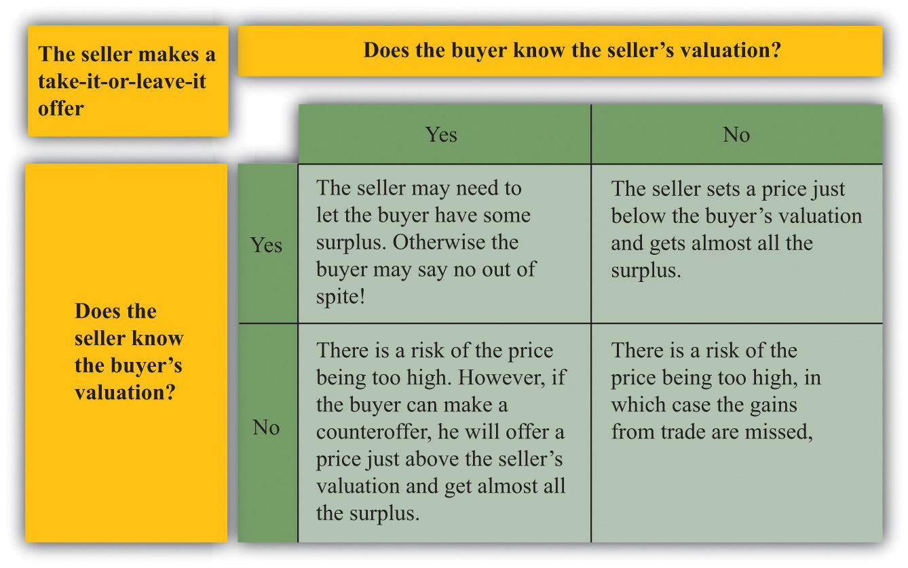

To begin our investigation of why and how we trade, let us examine craigslist (http://www.craigslist.org), an Internet site devoted to exchange. The craigslist site is very similar to the classified advertisements in a newspaper except that the advertisements are online. It is local, in the sense that there is a different site for different places. You can find craigslist sites for cities and states throughout the United States, and—at the time of this writing—for 14 cities and 54 countries around the world. If you visit the craigslist website, you will see there are many types of goods and services listed. For now, we focus on the purchase of a good. Later, we will consider the purchase and even the exchange of services.
Pricing on craigslist commonly takes a take-it-or-leave-it form. The seller posts a price and then buyers and sellers communicate through (anonymous) e-mails. Of course, the buyer always has the option of trying to turn this take-it-or-leave-it scenario into back-and-forth bargaining by making a counteroffer. Once they have agreed to trade, the buyer and seller must find a way to consummate the transaction—delivering the good and making payment.
Suppose you are interested in buying a car. You go to craigslist in your area and search through offers to sell cars. These offers typically provide lots of information about the product, usually including photos and a price. If you want to inquire about a particular car, you can contact the seller. If you want to buy the car, you can accept the seller’s offer. If you want to negotiate, you can do so as well. To get at the heart of this kind of exchange, let us first take a simple case where there is a single seller and a single buyer.
Economists generally think that individuals make decisions in their own self-interests. If a seller is willing to sell a good at a given price, and a buyer is willing to buy at that price, our presumption is that this exchange makes them both better off. This deceptively simple idea is the very heart of economics: voluntary trade makes both participants better off. The word voluntary matters here. We are supposing that both people freely enter into this trade. If two people make a deal of their own free will and if they are rational, in the sense that they can make decisions in their own best interests, then the deal must make them both better off.
The demand for a car is an example of a unit demand curve because you are deciding whether or not to buy at all rather than how much you should buy.See Chapter 4 "Everyday Decisions" for more discussion. The buyer has a valuation for the good, which represents the most he would be willing to pay for it. For example, suppose you see a used car on craigslist, and your valuation of this car is $3,000. This means that you would be equally happy either having the car and forfeiting $3,000 worth of other goods and services or not having the car. Figure 6.3 "The Buyer’s Valuation" shows what your demand curve looks like in this case. You are choosing to buy either zero units or one unit, so if the price is above your valuation, you do not buy the good, whereas if the price is below your valuation, you buy the car.
Toolkit: Section 31.1 "Individual Demand"
You can review unit demand and valuation in the toolkit.
Figure 6.3 The Buyer’s Valuation
The buyer follows the decision rule: “Buy if the price is less than the valuation.”
If your valuation were $3,000, then you would, of course, prefer to pay much less. If the car is for sale for $2,990, then it is true that you would be better off buying the car than not, but you won’t get much out of the deal. You would be happier only to the tune of $10 (more precisely, $10 worth of goods and services). If the car is for sale for $2,400, then you will be happier by an amount equivalent to $600 worth of goods and services. On the other hand, if the car were for sale for $3,001, you definitely would not want to buy at that price. Buying the car would actually make you slightly less happy.
The seller also has a valuation of the car. The seller is not willing to sell it at any price. For example, if her valuation is $2,000, she is equally happy keeping the car or not having the car and having an extra $2,000 worth of goods and services. If she can sell the car for more than $2,000, she will be better off. She won’t sell the car for less than $2,000 because then she would be less happy than before. We can show the seller’s willingness to sell in a way analogous to the buyer’s willingness to buy. Figure 6.4 "The Seller’s Valuation" shows that she will not sell the car at a price less than $2,000, but she will sell once the price is greater than $2,000.
By analogy to unit demand, we call this the unit supply curveA supply curve in which the buyer sells either zero units or one unit of a good but no more than one unit.. It tells us the price at which she is willing to sell. Below her valuation, she is unwilling to supply to the market. Above her valuation, she is willing to sell the good. Whereas the buyer’s valuation is the absolute maximum that the buyer is willing to pay, the seller’s valuation is the absolute minimum that the seller is willing to accept.
Figure 6.4 The Seller’s Valuation
The seller follows the decision rule: “Sell if the price is greater than the valuation.”
The buyer’s valuation in our example is larger than the seller’s valuation. This means it is possible to make both the buyer and the seller better off. The mere fact of transferring a good from someone who values it less to someone who values it more is an act that creates value in the economy. We say that there are gains from trade available here.
Toolkit: Section 31.10 "Buyer Surplus and Seller Surplus"
Total surplus is a measure of the gains from trade. In a single transaction,
total surplus = buyer’s valuation − seller’s valuation.In this example, therefore, the total surplusA measure of the gains from trade, equal to the buyer’s valuation minus the seller’s valuation. is $1,000. This is the value created in the economy by the simple fact of transferring the car from a seller who values it less to a buyer who values it more. Figure 6.5 "Buyer and Seller Valuations" shows this graphically by combining the unit demand curve and the unit supply curve.
Figure 6.5 Buyer and Seller Valuations
The total surplus from a transaction is equal to the buyer’s valuation minus the seller’s valuation. Graphically, total surplus can be represented as a rectangle. The height of the rectangle is the difference in the valuations. The base of the rectangle is 1 because only one unit is being traded.
The buyer wants the price to be as low as possible, whereas the seller wants the price to be as high as possible. If both agree on a price of $2,100, for example, the buyer gets most of the surplus, and the seller does not get very much. If they agree on a price of $2,900, the situation is reversed: most of the benefit goes to the seller. The distribution of the value created depends on the price. Either way, though, they are both made better off by the trade, and in both cases the total surplus is the same (Figure 6.6 "The Distribution of Total Surplus").
Toolkit: Section 31.10 "Buyer Surplus and Seller Surplus"
The buyer surplus is a measure of how much the buyer gains from a transaction, and the seller surplus is a measure of how much the seller gains from a transaction:
buyer surplus = buyer’s valuation − priceand
seller surplus = price − seller’s valuation.The total surplus is the sum of the buyer surplus and the seller surplus.
Figure 6.6 The Distribution of Total Surplus
The distribution of surplus between the buyer and the seller depends on the price. A low price means that the buyer will get most of the surplus, while a high price means that the seller will get most of the surplus. The total surplus, however, is the same no matter what the price.
When the buyer purchases the car from the seller, there is a reallocation of society’s resources. Dollars have gone from the buyer to the seller, and the car has gone from the seller to the buyer. Economists have developed a specific criterion, called efficiencyThe basis that economists use for judging the allocation of resources in an economy., for evaluating the way in which resources are allocated in a society.
It is actually easier to understand efficiency by looking at its opposite. Economists say that an allocation of resources is inefficient if there is some way to reallocate those resources that will make some people better off (that is, happier) without making anyone else worse off. For example, think about the situation where the buyer and seller have not traded the car. This allocation is inefficient. The buyer places a greater value on the car than does the seller, so it is inefficient for the car to remain with the seller. Any rearrangement of resources that makes some people better off without making anyone else worse off is welfare improving.
Toolkit: Section 31.11 "Efficiency and Deadweight Loss"
Efficiency is the basis that economists use for judging the allocation of resources in an economy. Resources are allocated efficiently if there is no way to reallocate them to make someone better off without making anybody else worse off.
Before the buyer and the seller trade, the allocation of resources is inefficient. However, there are many different trades that make both the buyer and the seller better off. In fact, any trade between a price of $2,000 and a price of $3,000 is welfare improving. The only thing that matters for economic efficiency is that a trade takes place, so the gains from tradeThe total surplus from a trade. can be realized. No matter how the surplus is distributed between the buyer and the seller, the outcome is efficient as long as the trade occurs.
We now know that as long as the buyer’s valuation for a good exceeds the seller’s valuation, there are potential gains from trade. We have not yet explored the mechanisms that allow trade to occur, nor have we explained what determines the price at which trades occur. To begin with, we ignore the possibility of bargaining. Then there are only two steps for selling an item on craigslist:
If the buyer accepts the seller’s offer, then an exchange is made. But what offer will the seller make? The answer depends on how much the seller knows about the buyer’s valuation of the good. There are two cases to consider:
The knowledge of the buyer also matters. Suppose that the buyer knows the seller’s valuation. Then he knows that there are possible gains from trade. In this case, it is natural to think that the buyer will try to negotiate with the seller, rather than just accept or reject the seller’s offer. Indeed, if the buyer knows the seller’s valuation, then we have the reverse of the first case. If the buyer offers a price slightly above the seller’s valuation, then the buyer should be able to capture the entire surplus. We summarize this in Figure 6.7 "The Outcomes from a Take-It-or-Leave-It Offer".
In practice, the buyer is also likely to try to negotiate if the seller’s price leaves the buyer with very little surplus. Thus even though craigslist is apparently based on take-it-or-leave-it offers, a great deal of bargaining does in fact take place.
Figure 6.7 The Outcomes from a Take-It-or-Leave-It Offer
